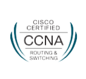
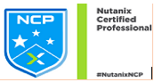

Siddhipur-06, Mahalaxmi, Lalitpur
Contact: +977-9810142252
Email: mhrznamn068@gmail.com
NETWORK & SYSTEMS ENGINEER
OBJECTIVES:
To achieve a greater professional career in IT field, implementing my educational knowledge, skills and technologies. I am seeking a challenging and rewarding opportunity where I can use my skills and talents to build up a solid contribution to company. And, to seek a challenging position where I can learn earn and grow with it.
PERSONAL PROFILE:
The nature of my degree course and a sound experience has prepared me for this position. A great independent research, self-motivation, self-learning and a wide range of skills, towards networking has driven me to success.
I am a fast and hardworking always looking forward to using my optimum skills and understanding. I can take on the responsibility of this position immediately and have the enthusiasm and determination to ensure that I make a success of it. I have a desire to learn new skills and master new tools and I am result oriented with a positive outlook.
PROFESSIONAL SUMMARY:
- AWS:
- Worked in deploying, automating, maintaining and managing AWS cloud-based production system, to ensure the availability, performance, scalability and security of production systems
- Experienced in AWS services such as EC2, S3, ELB, Auto Scaling, RDS, Cloud Watch, IAM, EBS, VPC, Direct Connect, VPN, Lambda, AWS shield, Route53.
- Experience in environment and application automation with CloudFormation, Backup and Disaster Recovery Approach and design, AWS cost management and optimization.
- Good knowledge in CI/CD pipeline in AWS.
- Network/System:
- Configure and manage the layer 2 and layer 3 devices (Routers, Switches) in the network.
- Good knowledge and worked in different routing protocols (OSPF,BGP,EIGRP,IS-IS).
- Good knowledge and worked in Switching technologies, VLAN, MPLS, VPLS, VRF.
-
- Good Knowledge and worked in IPSEC site to site VPN, GRE Tunnel , SSL VPN.
- Familiar with different vendor network devices (CISCO-ISR Routers ,CISCO-NX OS Switches ,CISCO Catalyst Switches , Mikrotik , BDCOM-OLT/SWITCH,RAISECOM-OLT/SWITCH)(Basic knowledge of Juniper Router)
- Good Knowledge and worked in Data Center Network technologies (Cisco-NX 5K,7K Switches , vPC, VDC, OTV)
- Wireless technologies (Cisco WLC,Cisco AP,Lucaya-War,Nano station M2 and M5 )
- Good knowledge and worked with voice technologies (Cisco CUCME , FreePBX , Elastix 2.5)
- Worked with Netscaler ADC Loadbalancer (SDX 111515,VPX )
- Worked in different windows server environment Windows server 2012 R2,2008,2016
(Active Directory,DNS,NPS,File Server, IIS )
- Good knowledge and worked in Linux environment (Apache ,Tomcat ,Bind , Email ,Samba ,OpenVPN, Vulnerability management ,RedHat Satellite, Centrify DC ,Clone Deploy).
- Good knowledge and worked in SCCM(System center configuration manager) Administration
(OS deployment, patch management, Software deployment ,script deployment ,Inventory management)
- Basic knowledge and worked in Virtualization (Vmware Exsi , Vcenter )
- Configuration of server and network monitoring tools on Linux platform (Nagios, Cacti, smokeping, MRTG).
- Worked with different Endpoint security (Checkpoint FDE, Firewall, Symantec Firewall)
- Commvault administration a backup solution
- Good knowledge and worked with hosting services cPanel.
- Basic knowledge in continuous integration using Bamboo, Git, Maven.
- Basic knowledge of continuous delivery, infrastructure automation using chef, Ansible.
- Basic knowledge of builds and release process.
- Programming/Scripting:
- Develop custom scripts to increase system efficiency and lower the human intervention time on tasks using Python, Bash and PowerShell.
PROFESSIONAL EXPERIENCE:
Sparrow Pay Pvt. Ltd.(Khalti Digital Wallet,SparrowSMS)- Senior System Administrator , Bakhundol, Lalitpur (khalti.com/sparrowsms.com) (2019 Dec-Till Date)
Duties and responsibilities:
- Maintaining network/system hardware and software, including servers, peripherals, network nodes, terminals and wiring.
- Configure/Add new services as necessary in windows and Linux server environments.
- Configure and troubleshoot Cisco routers, switches, firewalls, WLC, Cisco-AP for data center as well as user network.
- Maintain Active Directory objects and group policy.
- Design and architect AWS infrastructure as per project needs (EC2, VPC, RDS, ELB, S3, Route 53, NACL, Security Group, Cloud Formation, Direct Connect, VPN)
- Participate in planning, implementation, and growth of the infrastructure on AWS.
- Deploying, automating, maintaining and managing AWS cloud-based production system, to ensure the availability, performance, scalability and security of production systems.
- SCCM Administration (OS deployment, Software deployment, monthly wise OS patch management and vulnerability management)
- Troubleshooting issue related to SVN, GIT and provide access as per requirement.
- Configure and administer Cisco CUCME with various features (IVR, Cisco IP Phones, PSTN, SIP)
- Configuration and monitor network connectivity throughout the company and datacenter. (LAN/WAN/VPN)
- Develop custom scripts to increase system efficiency and lower the human intervention time on any tasks using Python, bash and PowerShell.
- Apply OS patches on 600 + Red Hat and Centos servers on monthly basis using Satellite server.
- Frequent communication with vendors and service providers.
- Providing IT infrastructure and other technical support to staffs of company.
Verisk Nepal Pvt. Ltd.. – System Administrator, Hattisar ,Kathmandu (Verisknepal.com.np)
(2017 March-2019 Dec)
Duties and responsibilities
- 1. Maintaining network/system hardware and software, including servers, peripherals, network nodes, terminals and wiring.
- Configure/Add new services as necessary in windows and Linux server environments.
- Configure and troubleshoot Cisco routers, switches, firewalls, WLC, Cisco-AP for data center as well as user network.
- Maintain Active Directory objects and group policy.
- Design and architect AWS infrastructure as per project needs (EC2, VPC, RDS, ELB, S3, Route 53, NACL, Security Group, Cloud Formation, Direct Connect, VPN)
- Participate in planning, implementation, and growth of the infrastructure on AWS.
- Deploying, automating, maintaining and managing AWS cloud-based production system, to ensure the availability, performance, scalability and security of production systems.
- SCCM Administration (OS deployment, Software deployment, monthly wise OS patch management and vulnerability management)
- Troubleshooting issue related to SVN, GIT and provide access as per requirement.
- Configure and administer Cisco CUCME with various features (IVR, Cisco IP Phones, PSTN, SIP)
- Configuration and monitor network connectivity throughout the company and datacenter. (LAN/WAN/VPN)
- Develop custom scripts to increase system efficiency and lower the human intervention time on any tasks using Python, bash and PowerShell.
- Apply OS patches on 600 + Red Hat and Centos servers on monthly basis using Satellite server.
- Frequent communication with vendors and service providers.
- Providing IT infrastructure and other technical support to staffs of company.
Primuson Pvt. Ltd. – IT Administrator, Lazimpat,Kathmandu (Primuson.com)
(2016 Dec-2017 Feb)
Duties and responsibilities
- Maintains Network/System hardware and software, including servers, peripherals, network nodes, terminals and wiring.
- Maintain Active Directory objects and Group Policy.
- Monitoring network and servers using various monitoring tools and servers (Cacti, Smokeping,)
- Internet traffic load balancing as per need.
- Providing technical support to clients on call and on client premises.
- Communication with different vendors and service providers of company.
- Helping colleagues with complex and simple technical issues.
Vianet Communication Pvt. Ltd. – Network Engineer, Jawalakhel,Kathmandu (Vianet.com.np) (2013 May – 2016 November)
Duties and responsibilities
- 1. Configure, maintain, and troubleshoot routing protocols.
- Manage and configure OSPF as IGP protocol for internal routes updates.
- Configure and manage BGP (eBGP/iBGP ) in mix Vendors (CISCO, JUNIPER, Mikrotik)
- Configure and maintain open source and/or commercial/cloud hosted network monitoring/network monitoring software.
- EPON, GPON, OLT, ONU, FTTH Network deployment and monitoring
- Perform root cause analysis of network issues utilizing network troubleshooting utilities.
- Upgrading data network equipment to the latest stable firmware releases.
- capacity management and audit of IP addressing
- Remote support of on-site engineers during installation
- Day-to-day network performance monitoring.
- The design and implementation of new solutions and improving the resilience of the current environment.
EDUCATION:
| 2016 |
: |
Bachelor of Computer Application |
| University |
: |
Purbanchal University |
| Institution |
: |
College of Information Technology |
| CGPA |
: |
3.30 CGPA |
|
|
|
| 2012 |
: |
Intermediate Level |
| Discipline |
: |
Management |
| Board |
: |
Higher Secondary Education Board |
| Institution |
: |
DAV College, Jawalakhel, Lalitpur |
| Division |
: |
First |
| Percentage |
: |
67.00% |
|
|
|
| 2010 |
: |
SLC |
| Board |
: |
Nepal Government |
| Institution |
: |
Ananta English School, Siddhipur, Lalitpur |
| Division |
: |
Distinction |
| Percentage |
: |
84.75% |
CERTIFICATIONS:
- CCNA Routing Switching
CISCOID : CSCO13173668
Verification Code No : 431984179469JKXL

- AWS-Cettified Cloud Practitioner
Validation Number : 3PBNL3B1DB11QVGC
Issue Date : July 30, 2018
Expiration Date : July 30, 2020
- Nutanix Certified Professional(NCP 5.5)

Issued on 24th November 2018
COURSE COMPLETED:
- CCNA DC , Adroit Information Technology Academy, 2/162, Dum Dum Road, 1st. Floor Tanwar
Colony (Near GTR Gate), Kolkata, West Bengal 700074, India ,Duration 4 months
- AWS Solutions Architect- Associate, Simplilearn(Onsite 5 Days Course)
- AWS Sysops Administrator, Cloudguru
- IPV4/V6 Routing Workshop, APRICOT 2018,Kathmandu
- CCNA R &S ,Microtech Computer Education ,Duration 2 months
- CCNP Routing Switching -CBT Nuggets
- Hardware and Networking, Aptech Computer Education, Lalitpur, Duration 6 months
REFERENCES:
- Mr. Chandra Bishal Bhurtel
Vice-Principle,
College of Information Technology and Engineering
- Mr.Rajendra Maharjan
Senior Network Engineer/CCNA Trainer
Subisu Cable Network/Microtech computer Education/New Horizon Computer Education
9801158359
©2020 Aman Maharjan